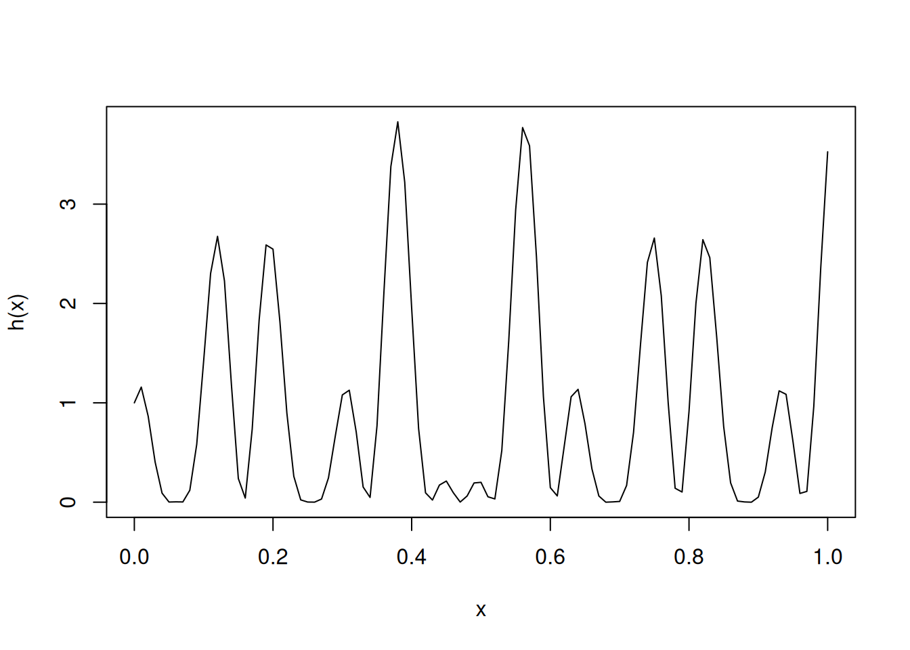
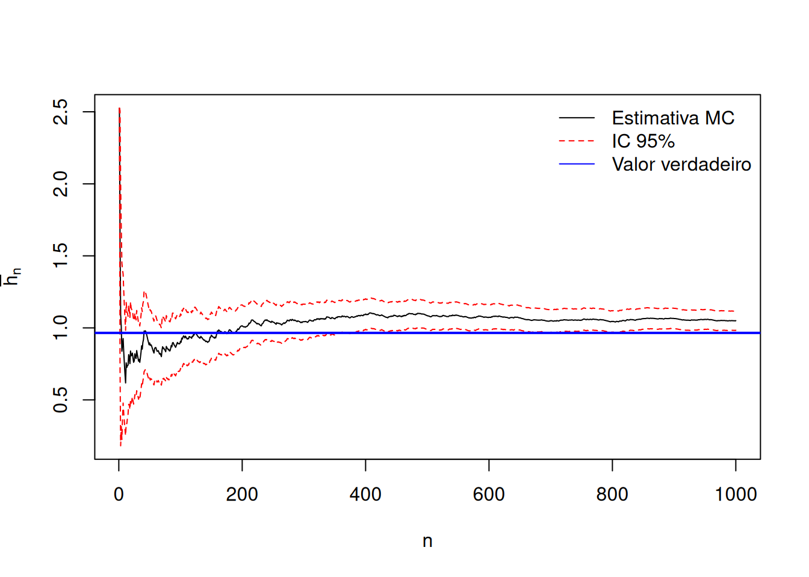

4 Métodos de Monte Carlo
4.1 Introdução
Os métodos de Monte Carlo formam uma classe de algoritmos baseados em simulação aleatória. Eles surgiram no final da década de 1940, especialmente com os trabalhos de John von Neumann, Stanislaw Ulam, Enrico Fermi e Nicholas Metropolis. O nome deriva da cidade famosa por seus cassinos.
4.2 Aplicações
Na Estatística, os métodos de Monte Carlo são utilizados para:
estimar parâmetros da distribuição amostral;
calcular MSE (erro quadrático médio);
avaliar cobertura de intervalos de confiança;
estimar probabilidades de erro tipo I;
estimar poder de testes de hipóteses.
O princípio central é usar amostragem aleatória massiva para resolver problemas de integração ou otimização.
4.3 Integração de Monte Carlo
4.3.1 Problema geral
Queremos calcular:
\[\int_\chi g(x)\,dx\]
Se conseguimos escrever \(g(x) = h(x) f(x)\), sendo \(f\) uma densidade, então
\[\int_\chi h(x) f(x) dx = E_f[h(X)],\]
e aproximamos a integral por:
\(\bar h_n = \frac{1}{n} \sum_{j=1}^n h(x_j).\)
4.4 Convergência (Lei Forte dos Grandes Números)
Se \(X_1,\dots,X_n\) são i.i.d. com média \(\mu\),
\[\bar X_n \xrightarrow{qc} \mu.\]
4.4.1 Exemplo 1 — Integral em \([0,1]\)
\[I = \int_0^1 [\cos(50x) + \sin(20x)]^2\,dx.\]
4.4.1.1 Código em R
h <- function(x) (cos(50*x) + sin(20*x))^2
integrate(h, 0, 1)0.9652009 with absolute error < 1.9e-10n <- 1e5
x <- runif(n)
mean(h(x))[1] 0.9702052curve(h, from = 0, to = 1)
4.4.2 Exemplo 2 — Integral imprópria
\[I = \int_0^\infty e^{-x^2/2} dx,\] use a transformação \(y = \frac{1}{x + 1}\) e obtenha
\[I = \int_0^1 y^{-2} \exp\left\{-\frac{[(1-y)/y]^2}{2}\right\} dy.\] Daí a segue naturalmente como no caso anterior.
4.4.3 Cálculo de probabilidades via Monte Carlo
Para uma variável aleatória \(X\),
\[P(X \in A) = E[I_A(X)],\]
então, estimamos:
\[\hat P = \frac{1}{n}\sum_{i=1}^n I_A(X_i).\]
4.4.4 Exemplo: \(P(X>2.5)\), com \(X\sim N(0,1)\)
n <- 1e6
x <- rnorm(n)
mean(x > 2.5)[1] 0.0062164.5 Erro de Monte Carlo
Queremos estimar:
\[E_f[h(X)],\]
com estimador de Monte Carlo: \(\bar h_n\). A Variância do estimador de Monte Carlo é dada por:
\[\operatorname{Var}(\bar h_n) = \operatorname{Var}\left(\frac{1}{n}\sum_{j=1}^n h(X_j)\right) = \frac{n \, \operatorname{Var}(h(X_j))}{n^2} = \frac{\operatorname{Var}(h(X))}{n}.\] A variância de \(h(X)\) pode ser estimada por
\[\widehat{\operatorname{Var}}(h(X)) = \frac{1}{n}\sum_{j=1}^n \bigl(h(x_j) - \bar h_n\bigr)^2.\]
Portanto, a variância do estimador de Monte Carlo \(\bar h_n\) é estimada por:
\[\widehat{\operatorname{Var}}(\bar h_n) = \frac{1}{n^2}\sum_{j=1}^n \bigl(h(x_j) - \bar h_n\bigr)^2 = v_n.\]
O erro padrão, \(\sqrt{v_n}\), reflete a precisão da aproximação.
set.seed(1234)
n <- 1e3
x <- runif(n)
h <- (cos(50*x) + sin(20*x))^2
hbn <- cumsum(h)/(1:n)
vn <- cumsum((h - hbn)^2)/(1:n)^2
# Bandas de 95% de confiança
LI <- hbn - 1.96 * sqrt(vn)
LS <- hbn + 1.96 * sqrt(vn)
# integral_0^1 (cos(50 x) + sin(20 x))^2 dx = 0.965201
I_true <- 0.965201
# Gráfico com bandas
plot(hbn, type = "l", xlab = "n",
ylab = expression(bar(h)[n]),
ylim = range(LI, LS))
lines(LI, col = "red", lty = 2)
lines(LS, col = "red", lty = 2)
abline(h = I_true, col = "blue", lwd = 2) # linha do valor verdadeiro
legend("topright",
legend = c("Estimativa MC", "IC 95%", "Valor verdadeiro"),
lty = c(1, 2, 1),
col = c("black", "red", "blue"),
bty = "n")
4.6 Uso de Números Aleatórios na Avaliação de Integrais
Uma das primeiras aplicações do uso de números aleatórios foi na resolução de integrais. Considere uma função \(g(x)\) e suponha que desejamos calcular uma integral de interesse.
\[\theta = \int\limits_{0}^{1}g(x) dx.\]
Para calcular o valor da integral, observe que, se \(U\) é uma variável aleatória com distribuição uniforme no intervalo \((0, 1)\), então podemos reescrever a integral da seguinte forma:
\[\theta = E[g(U)].\] Se \(U_1, U_2, \dots, U_n\) são variáveis aleatórias independentes e uniformes em \((0, 1)\), então as variáveis \(g(U_1), g(U_2), \dots, g(U_n)\) são indepedentes e identicamente distribuídas, todas com esperança igual \(\theta\) (o valor da integral). Assim, pelo Teorema da Lei Forte dos Grandes Números, temos que, com probabilidade 1,
\[\frac{1}{n}\sum\limits_{i=1}^{n}g(U_i) \to \theta \quad \text{quando} \quad n \to \infty.\]
Assim, podemos aproximar o valor da integral gerando um grande número de pontos aleatórios \(u_i\) no intervalo \((0, 1)\) e tomando como estimativa a média dos valores \(g(u_i)\). Esse procedimento de aproximação de integrais é conhecido como método de Monte Carlo.
Se quisermos calcular uma integral mais geral, podemos aplicar a mesma ideia: transformar o problema em uma esperança matemática e, em seguida, aproximá-la por meio de médias amostrais obtidas a partir de números aleatórios. Considere:
\[\theta = \int\limits_{a}^{b}g(x) dx.\]
Se quisermos calcular a integral em um intervalo genérico \((a, b)\), fazemos a substituição
\[u = \frac{x - a}{b-a}, \quad du = \frac{dx}{b-a},\]
o que nos permite reescrevê-la como
\[\theta = \int\limits_{a}^{b}g(x) dx = (b-a)\int\limits_{0}^{1}g(a + (b-a)u) du.\]
Definindo
\[h(u) = (b-a)g(a + (b-a)u),\]
temos
\[\theta = \int\limits_{0}^{1}h(u) du.\]
Assim, podemos aproximar \(\theta\) gerando números aleatórios \(u_1, u_2, \dots, u_n \sim U(0, 1)\) e tomando como estimativa a média
\[\frac{1}{n}\sum\limits_{i=1}^{n}h(u_i).\] Agora, se nosso objetivo é calcular a integral:
\[\theta = \int\limits_{0}^{\infty}g(x) dx.\]
Fazendo a mudança de variável
\[u = \frac{1}{x+1}, \quad du = \frac{-dx}{(x+1)^2} = -u^2 dx.\]
Logo,
\[dx = -\frac{du}{u^2},\]
e a integral resultante é
\[\theta = \int\limits_{0}^{1}h(u) du,\]
com
\[h(u) = \frac{g\left(\frac{1}{u} - 1\right)}{u^2}.\]
A utilidade de empregar números aleatórios para aproximar integrais torna-se ainda mais evidente no caso de integrais multidimensionais. Suponha que \(g\) seja uma função com argumento \(n\)-dimensional e que estejamos interessados em calcular:
\[\theta = \int\limits_{0}^{1}\int\limits_{0}^{1}\dots\int\limits_{0}^{1} g(x_1, x_2, \dots, x_n)dx_1 dx_2 \dots dx_n.\]
Observe que \(\theta\) pode ser expresso como o seguinte valor esperado:
\[\theta = E[g(U_1, U_2, \dots, U_n)],\]
em que \(U_1, U_2, \dots, U_n\) são variáveis aleatória independentes uniformente distribuídas no intervalo \((0, 1)\). Assim, se gerarmos \(k\) conjuntos independentes, cada um formado por \(n\) variáveis aleatórias independentes com distribuição uniforme em \((0, 1)\), então as variáveis
\[g(U_{i1}, U_{i2}, \dots, U_{in}), \quad i = 1, 2, \dots, k,\] serão independentes e identicamente distribuídas, todas com esperança igual a \(\theta\) (o valor da integral). Portanto, podemos estimar \(\theta\) por meio da média amostral:
\[\hat{\theta} = \frac{1}{k}\sum\limits_{i=1}^{k}g(U_{i1}, U_{i2}, \dots, U_{in}).\]
Exemplo
Nosso objetivo é encontrar o valor aproximado da integral: \(\int_{0}^{1} x^3 dx = 0.25.\)
set.seed(2025) #fixando a semente
n <- 100000 #quantidade de valores uniformes gerados
u <- runif(n) #numeros uniformes (0,1)
mean(u^3)[1] 0.2503221import numpy as np
np.random.seed(2025)
n = 100000
u = np.random.uniform(0, 1, n)
resultado = np.mean(u**3)
print(resultado)0.2508972398766188Exercícios
Se \(x_0 = 5\) e \(x_n = 3x_{n-1}\, \text{mod}\, 150\), encontre \(x_1, x_2, \dots, x_{30}\).
Se \(x_0 = 3\) e \(x_n = (5x_{n-1} + 7)\, \text{mod}\, 200\), encontre \(x_1, x_2, \dots, x_{10}\).
Compare sua estimativa com o valor exato:
\(\int_{0}^{1} \exp\{{e^x}\} dx\).
\(\int_{0}^{1} (1 - x^2)^{3/2} dx\).
\(\int_{-2}^{2} \exp\{x + x^2\} dx\).
\(\int_{0}^{\infty} x(1 + x^2)^{-2} dx\).
\(\int_{-\infty}^{\infty} \exp\{-x^2\} dx\).
\(\int_{0}^{1}\int_{0}^{1} \exp\{(x+y)^2\} dy dx\).
\(\int_{0}^{\infty}\int_{0}^{x} \exp\{-(x+y)\} dydx\).
- Use simulação para encontrar o valor aproximado de \(Cov(U, e^U)\), em que \(U\) é uniforme em \((0,1)\). Compare seu resultado com o valor exato.
4.7 Simulações de Monte Carlo em Inferência
Simulações de Monte Carlo têm como objetivo estudar as propriedades de técnicas de inferência estatística. No essencial, uma simulação de Monte Carlo funciona aplicando essas técnicas a amostras repetidamente geradas a partir de um processo de geração de dados previamente especificado.
O pacote tidyMC busca contemplar e simplificar todo o fluxo de trabalho necessário para executar uma simulação de Monte Carlo, seja em um contexto acadêmico ou profissional. Assim, o tidyMC fornece funções para as seguintes tarefas:
Executar uma simulação de Monte Carlo para uma função definida pelo usuário sobre uma grade de parâmetros, utilizando
future_mc().Resumir os resultados por meio de funções de resumo (opcionais) definidas pelo usuário, usando
summary.mc().Criar gráficos dos resultados da simulação de Monte Carlo, que podem ser modificados pelo usuário, por meio de
plot.mc()eplot.summary.mc().Gerar uma tabela em LaTeX resumindo os resultados da simulação de Monte Carlo usando
tidy_mc_latex().
4.7.1 Instalação
O pacote tidyMC está disponível no CRAN. Para baixar a versão do CRAN basta:
install.packages("tidyMC")Em seguida, o pacote pode ser carregado com:
library(tidyMC)Além disso, os seguintes pacotes serão utilizados:
library(magrittr)
library(ggplot2)
library(kableExtra)4.8 Execute sua primeira Simulação de Monte Carlo com future_mc()
A função future_mc() permite executar uma simulação de Monte Carlo para uma função definida pelo usuário e para um conjunto especificado de parâmetros.
O primeiro argumento de future_mc() é fun, que deve ser uma função capaz de realizar três tarefas para uma única repetição e uma única combinação de parâmetros:
gerar os dados,
aplicar o método de interesse,
avaliar o resultado obtido.
A função future_mc() se encarrega de gerar automaticamente os laços sobre as grades de parâmetros desejadas, bem como repetir o experimento de Monte Carlo para cada combinação de parâmetros.
Considere o seguinte exemplo de função fun, que realiza exatamente as tarefas necessárias: geração dos dados, aplicação do método e avaliação dos resultados.
test_func <- function(param1 = 10, param2 = 2, n = 100) {
data <- rnorm(n, mean = param1, sd = param2)
stat <- mean(data)
stat_2 <- sum((data- mean(data))^2)/length(data)
dev_mu <- stat - param1
dev_sigma2 <- stat_2 - param2^2
dev_eqm_mu <- (stat - param1)^2
dev_eqm_sigma2 <- (stat_2 - param2^2)^2
return(list(mean = stat, var = stat_2, bmu = dev_mu, bsig2 = dev_sigma2,
eqmmu = dev_eqm_mu,
eqmsigma2 = dev_eqm_sigma2))
}O segundo argumento de future_mc() é repetitions, que deve ser um número inteiro especificando o total de iterações da simulação de Monte Carlo.
O terceiro argumento, param_list, deve ser uma lista cujos componentes têm nomes correspondentes aos parâmetros da função fun que deverão variar ao longo da simulação. Cada componente dessa lista é um vetor contendo os valores desejados da grade para aquele parâmetro.
Considere o exemplo a seguir para param_list. Observe que seus componentes recebem nomes que correspondem exatamente aos parâmetros da função test_func(): param e x1, respectivamente:
param_list <- list(
n = c(10, 50, 90)
)A função future_mc() cria automaticamente todas as combinações possíveis de parâmetros especificadas em param_list e executa a simulação de Monte Carlo para cada uma dessas combinações. Se você preferir não rodar a simulação para todas as combinações possíveis, pode fornecer param_table, que deve ser um data.frame ou data.table contendo apenas as combinações de parâmetros de interesse.
O argumento ... permite especificar outros argumentos da função fun que não estão em param_list. Esses argumentos permanecerão fixos ao longo de todas as combinações de parâmetros.
Requisitos formais que fun deve satisfazer:
Os argumentos presentes em
param_listdevem ser escalares;Toda variável usada dentro de fun deve ser definida internamente ou fornecida via
...;O valor retornado por
fundeve ser uma lista nomeada;Os nomes dos valores retornados e os nomes dos argumentos presentes em
param_listnão podem coincidir.
Se a função fun retorna uma lista nomeada de escalares, o usuário pode utilizar summary() para resumir todos os resultados da simulação de Monte Carlo.
set.seed(1234)
test_mc <- future_mc(
fun = test_func,
repetitions = 1000,
param_list = param_list,
param1 = 10,
param2 = 2
)Running single test-iteration for each parameter combination...
Test-run successfull: No errors occurred!Running whole simulation: Overall 3 parameter combinations are simulated ...
Simulation was successfull!
Running time: 00:00:00.73618summary(test_mc)Results for the output mean:
n=10: 9.991484
n=50: 9.992515
n=90: 9.997018
Results for the output var:
n=10: 3.678279
n=50: 3.916758
n=90: 3.949042
Results for the output bmu:
n=10: -0.008515738
n=50: -0.007484689
n=90: -0.002981764
Results for the output bsig2:
n=10: -0.3217209
n=50: -0.08324241
n=90: -0.0509576
Results for the output eqmmu:
n=10: 0.3646171
n=50: 0.08530073
n=90: 0.04476774
Results for the output eqmsigma2:
n=10: 3.350142
n=50: 0.5993374
n=90: 0.3374168
A função plot() retorna uma lista de objetos das classes gg e ggplot2. Essa lista conterá um gráfico de linhas para cada saída produzida pela função fun, representando as trajetórias dos resultados para os diferentes cenários da simulação.
plot(summary(test_mc))Para gerar uma tabela em LaTeX basta:
tidy_mc_latex(
x = summary(test_mc)
) %>%
print()